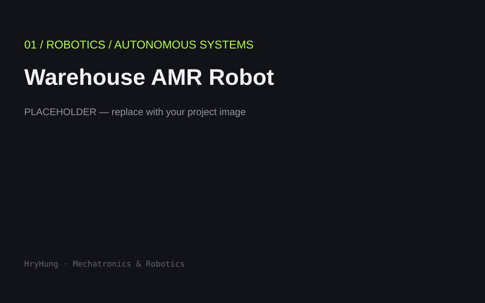
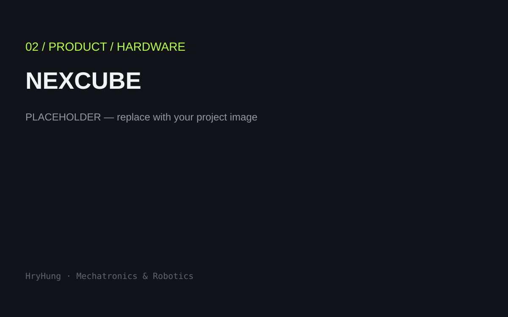
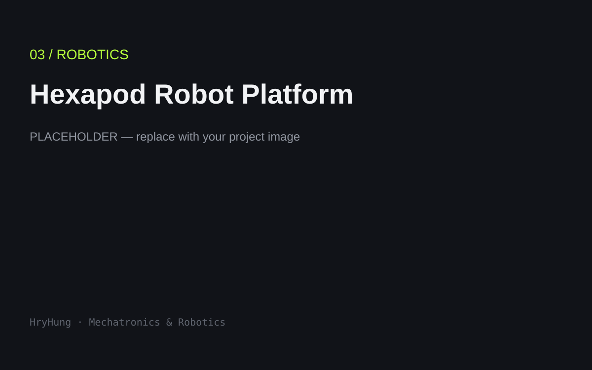
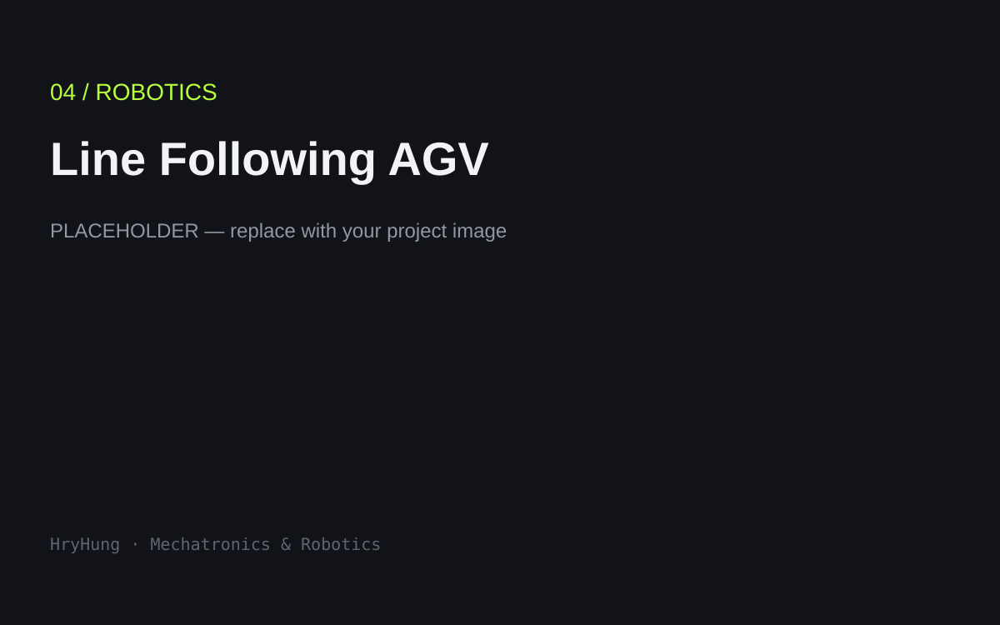
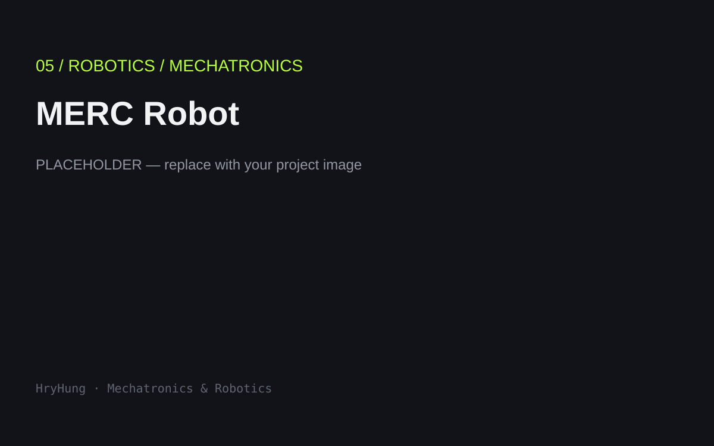
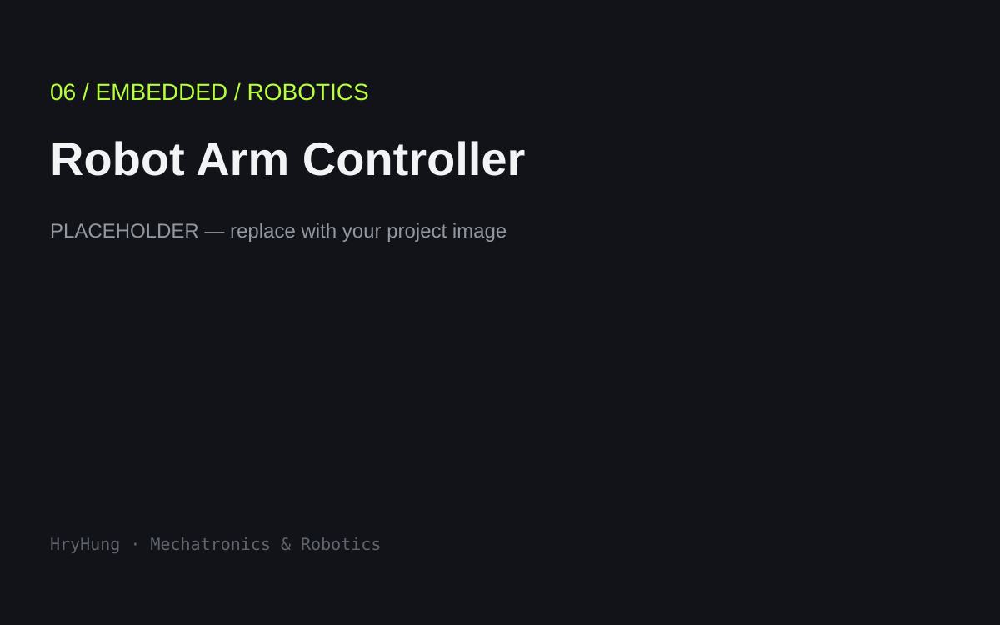
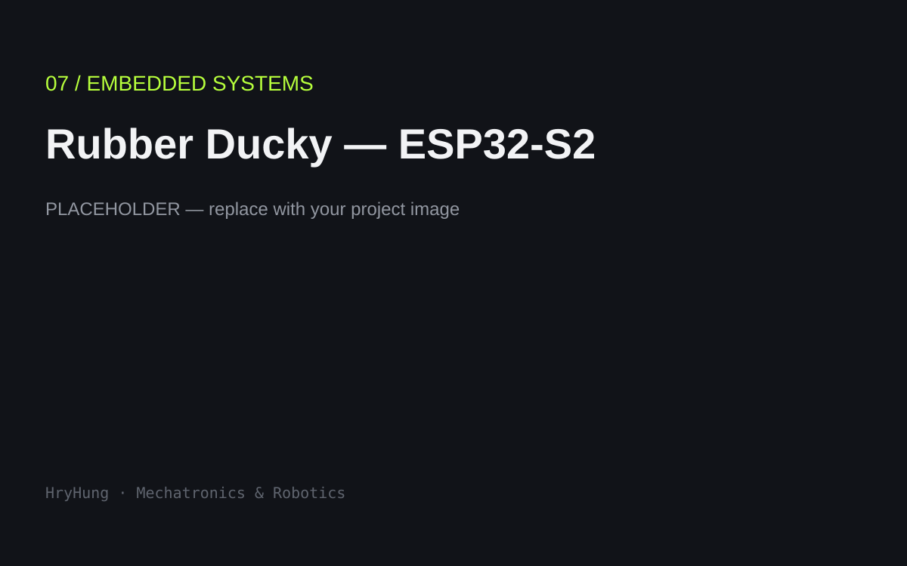
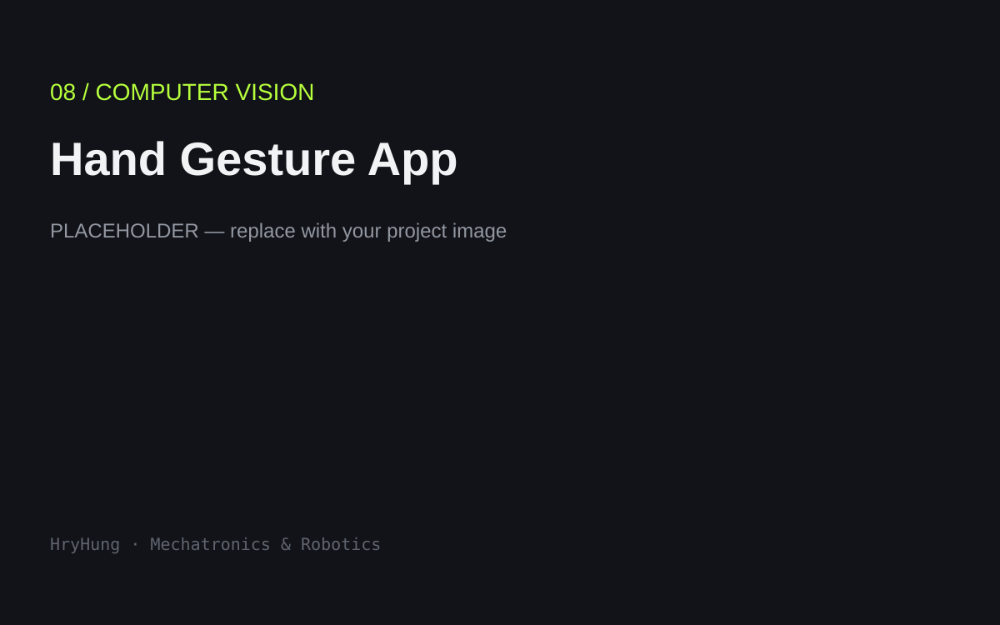
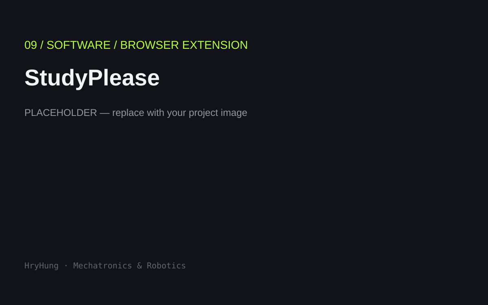

01
OPEN CASE STUDY ↗
Warehouse AMR Robot
A prototype indoor warehouse AMR integrating mechanical design, embedded motor control, LiDAR mapping, Nav2 navigation, AprilTag docking, and a web-based mission interface.
I design and build robotic systems across mechanical engineering, electronics, embedded control and autonomous robotics.
Hung / Mechatronics Engineer
robotics · embedded · systems
ROS2 · ESP32 · Raspberry Pi
09 engineering builds
My work connects mechanical design, electronics, embedded firmware, control and robotics software.
From autonomous mobile robots and legged platforms to embedded controllers and hardware products, I like building the complete chain from concept to working prototype.

A prototype indoor warehouse AMR integrating mechanical design, embedded motor control, LiDAR mapping, Nav2 navigation, AprilTag docking, and a web-based mission interface.

A modular portable electronics laboratory concept for hands-on STEM education and rapid prototyping.

A modular six-legged robotics platform for mechanical design, gait generation, inverse kinematics and embedded control experiments.

A line-following mobile robot with color-based sorting and autonomous goods distribution.

A robotics platform combining mechanical construction, electronics and motion-control work.

An embedded controller project for robotic-arm actuation and motion control.

An ESP32-S2 embedded-systems experiment exploring the platform's USB and microcontroller capabilities.

A computer-vision application using MediaPipe and Streamlit to detect hand gestures, count fingers and implement gesture-based unlocking.

A browser extension that turns restricted websites into short vocabulary checkpoints before allowing browsing.
Mentoring robotics builds involving line-following robots, hexapods and 3D-printed FPV platforms.
Product development work on the M18 double-battery snow blower platform.
Additive manufacturing and 3D-printed camera-lens development.
ROS2 · SLAM · Nav2 · Gazebo · Kinematics · Motion Control
ESP32 · Raspberry Pi · Sensors · Encoders · PWM · UART / CAN
SolidWorks · CAD · 3D Printing · MATLAB · Simulink
C / C++ · Python · MATLAB · JavaScript · Embedded Firmware
Robotics · Mechatronics · Embedded Systems · Product Development
GitHub ↗